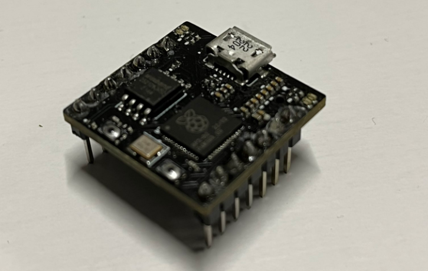
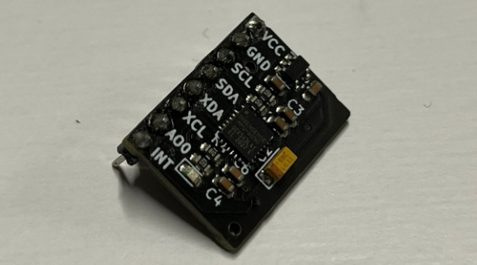
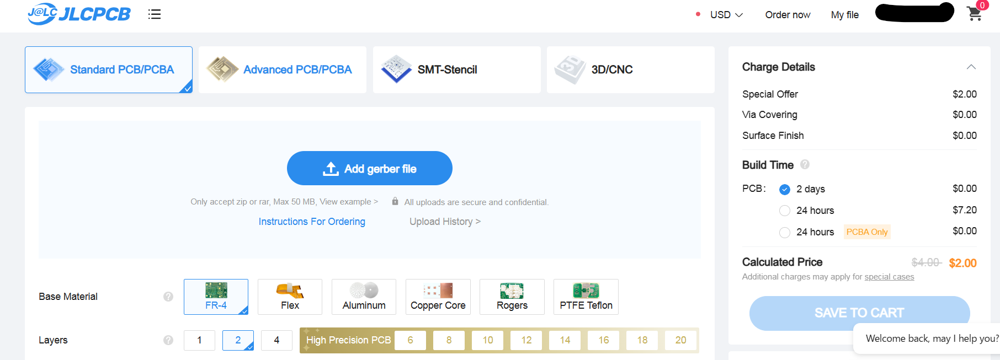
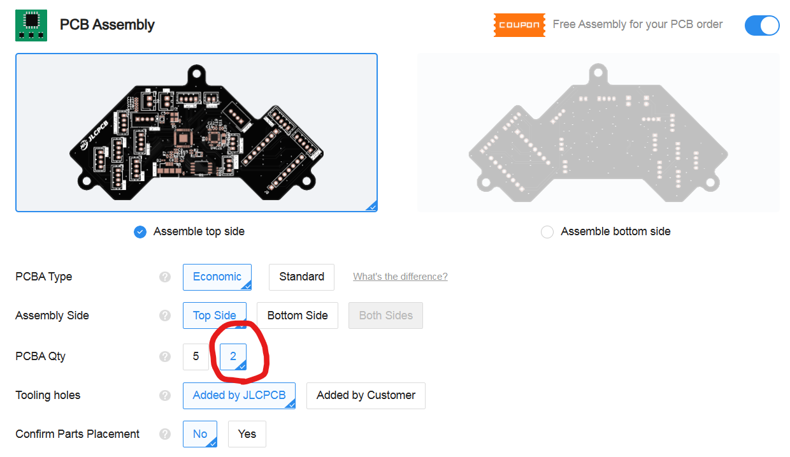
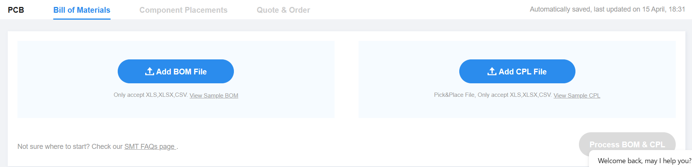
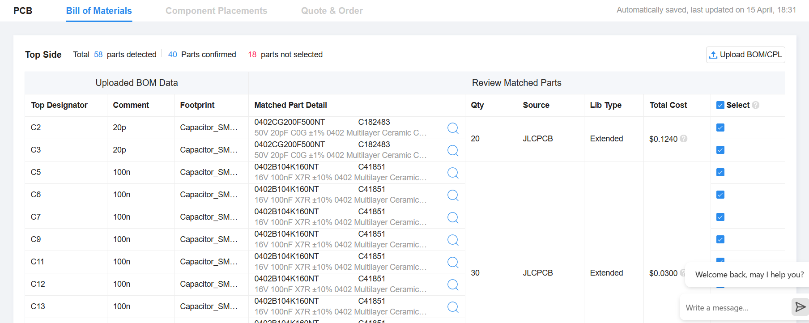
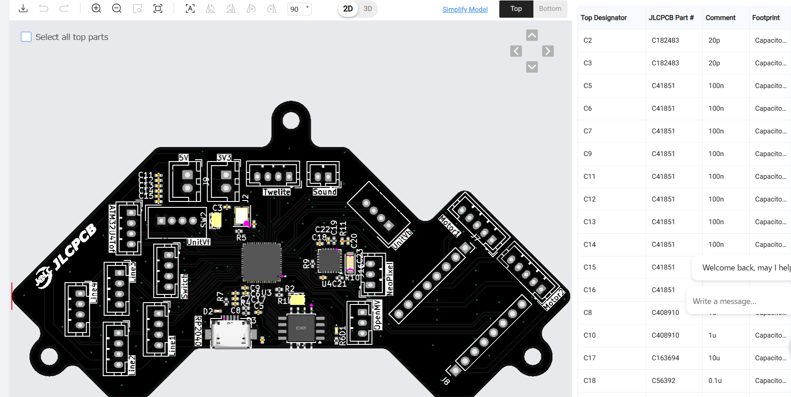

Raspberry PI picoの自作
2024/4/15 🖊たびと
自作RP2040のリベンジ
自作Arduino Leonardoが成功し、１年半にRaspberry PI picoの自作に挑戦しました。しかし、Arduino Leonardoの外部に接続する 水晶発振子と、Raspberry PI picoのマイコンであるRP2040の外部に接続する水晶発振子の周波数が違うことをわすれていて、 そのまま使用したため、まったく動きませんでした。そこで、今回、RP2040をロボットの基板に載せるために、自作をリベンジすることにしました。
前回の反省
今回は前回の反省を生かして、水晶発振子を正しい12MHzであることに気を付けて、部品の指定を行いました。
ジャイロセンサも実装
２年前ぐらいに、MPU6050の自作に成功しました。しかし、衝突時に、接触不良によるものかわかりませんでしたが、 ロボットが方向を取得できなくなるトラブルが多発しました。そこで、RP2040の基板にMPU6050も一緒に載せて見ることにしました。 接触不良が原因であったとすれば、衝突時の方向を見失うトラブルがなくなることが期待できます。
回路図の制作
RP2040を使用した基板の回路図はKicadのデータで公開されています。今回は、 できるだけ動作が保証されているこの回路図を変形して作っていきます。
JLCPCBで注文
今回もプリント基板を製造する企業JLCPCBで注文します。ここをクリックしてホームページに行きます。 order nowをクリックして、ファイルをアップロードします。
設定はすでに普通の基板が発注できるようになっているので、まあ基板の色を変えたければ、基板の色を変えます。 SMDの設定をします。今回は２枚分の表面実装を注文します。
部品表ファイル、部品位置ファイルをアップロードします。
使用部品の在庫があることを確認して次に進みます。
位置があっているか確認します。必要であれば部品をずらしたり、回転させたりします。 位置があっていれば次に進んで、注文情報を確認してカートに追加し、支払いの設定を行えば注文完了です。
結果は・・・
ちゃんとRaspberry PI picoとして動作しました。また、MPU6050からしっかり角度の情報を取得できました。 基板に載せていたLEDもしっかり点滅させることができ、基板の制作成功しました。
えぐいー！自作Raspberry pi pico動いたんだけど、え、もしかして僕って、天s... pic.twitter.com/IJ1Z4gPhv4
— たびと！🐙ー定理 (@tabito1419) April 6, 2024
えーいっしょにのってるMPU6050動きました。勝ちですこれ pic.twitter.com/kbaGKhXNj1
— たびと！🐙ー定理 (@tabito1419) April 6, 2024
最後に・・・スポンサーの紹介
今回もRaspberry PI picoの制作をJLCPCBにサポートしていただきました。 JLCPCBでは基板を安く早く注文することができます。初回ユーザーにはお得なクーポンもあるそうなので、ぜひ皆さんも使ってみてくださいね。